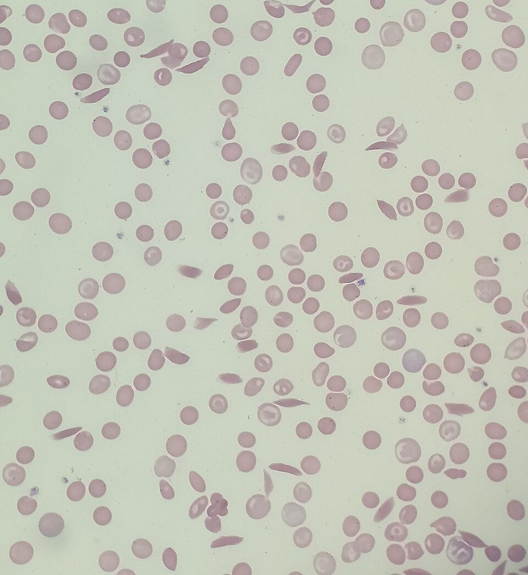
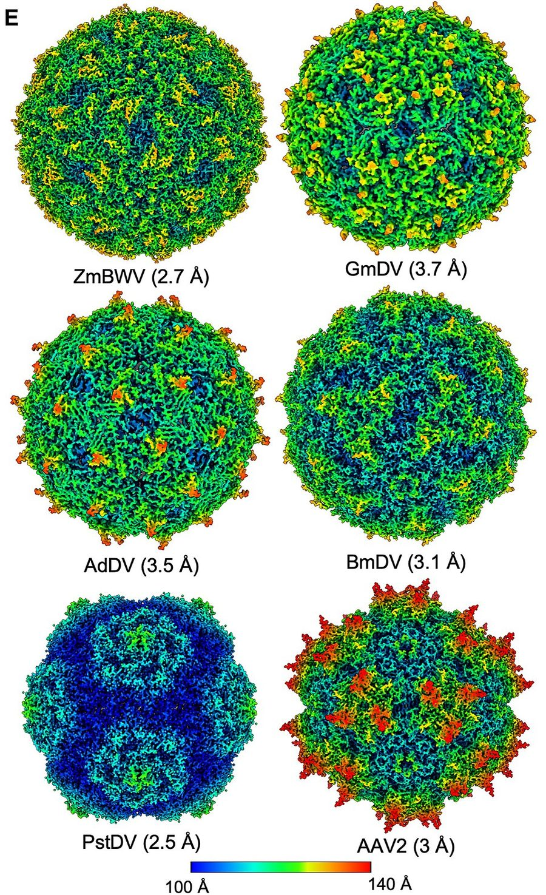

El ADN, explicado con claridad.
Enfermedades genéticas, pruebas y tratamientos explicados con claridad. Qué son los genes, cómo se heredan y hacia dónde va la medicina del ADN, con fuentes en cada página.
Prueba con:
1953: Watson y Crick propusieron el modelo de la doble hélice, apoyándose en los datos de Franklin, Gosling, Wilkins y Chargaff. El ADN ya se conocía desde 1869, y desde 1944 se sabía que era el material hereditario.
 Lo básicoQué es el ADNImagen: Zephyris · CC BY-SA 3.0 · Wikimedia Commons
Lo básicoQué es el ADNImagen: Zephyris · CC BY-SA 3.0 · Wikimedia Commons Preguntas frecuentes¿Los gemelos tienen el mismo ADN?Imagen: William A. Macis · Dominio público · Wikimedia Commons
Preguntas frecuentes¿Los gemelos tienen el mismo ADN?Imagen: William A. Macis · Dominio público · Wikimedia CommonsDe izquierda a derecha: Maclyn McCarty, James Watson y Francis Crick. Foto: Marjorie McCarty, PLOS Biology (2005), CC BY 2.5. La historia de la foto
¿Qué necesitas hoy?
Empieza por lo básico
28 fichas, de la A a la Z
Seis puertas a la genética

EnfermedadesEnfermedades y síndromes genéticos
Fichas claras de enfermedades y síndromes genéticos, se hereden o no: causa, síntomas, herencia, diagnóstico, tratamiento y dónde informarse.
28 artículos → Diagnóstico
DiagnósticoDel síntoma al resultado
Pruebas cromosómicas y moleculares, cribado neonatal y prenatal, portadores, cómo leer un resultado y consejo genético.
7 artículos →
TratamientosDe la evidencia a la atención
Tratamientos dirigidos y de soporte, terapia génica, CRISPR y farmacogenética: lo que ya funciona, lo que se investiga y los dilemas éticos.
5 artículos → Herencia
HerenciaCómo se heredan los rasgos
De Mendel a la epigenética: patrones de herencia, penetrancia y por qué el riesgo no es destino.
4 artículos →HistoriaDe Mendel al genoma
Una línea de tiempo de la genética, de los guisantes de Mendel a CRISPR y el pangenoma.
Ver la cronología → Personajes
PersonajesLas personas detrás de la genética
Médicos, genetistas, bioquímicos y biólogos que hicieron avanzar la genética, de Mendel a CRISPR: qué descubrieron, cómo y por qué importa hoy.
38 artículos →De los guisantes de Mendel al genoma completo
Mendel y los guisantes
Gregor Mendel describe las reglas de la herencia. Su trabajo pasa casi inadvertido durante 34…
El ADN es el material genético
Avery, MacLeod y McCarty demuestran que el principio transformante es el…
La doble hélice
James Watson y Francis Crick proponen la estructura en doble hélice del…
El genoma humano
Se publican los primeros borradores (2001) y se completa el Proyecto Genoma Humano…
CRISPR-Cas9 como herramienta
Charpentier y Doudna demuestran que CRISPR-Cas9 puede programarse para cortar el ADN donde se…
Edición genética a medida
Un bebé con una enfermedad metabólica rara recibe el primer editor de bases diseñado solo para…
Últimos artículos
Breve: un mapa de cómo los genes elevan el riesgo de infarto
Un estudio publicado en Nature sitúa en las células de la pared de las arterias buena parte del riesgo heredado de enfermedad coronaria.
Leer →Breve: un fármaco que «silencia» un gen, aprobado para la miastenia gravis
Estados Unidos aprobó en noviembre Livsayis (cemdisiran), de Regeneron, el primer ARN de interferencia para esta enfermedad autoinmune.
Leer →
KJ, el primer bebé tratado con una edición genética hecha a medida
En 2025, un equipo de Filadelfia diseñó en seis meses una edición genética solo para un bebé con una enfermedad metabólica mortal. Un hito que puede cambiar el tratamiento de las enfermedades raras.
Leer →Para repasar, jugar y enseñar
Glosario
Las palabras de un informe genético, explicadas en una o dos frases.
Abrir →RecursoQuiz
Diez preguntas al día, por tema o por nivel, con la explicación de cada respuesta.
Abrir →RecursoRecursos para profesores
Rutas de lectura por niveles, actividades prácticas para el aula y temas de debate con enlaces a los artículos de Geneticapedia.
Abrir →Dónde consultar la investigación
Bases de datos y registros oficiales donde se publica la investigación, con lo que conviene mirar en cada uno. Que un estudio exista no significa que un tratamiento esté disponible.
Publicaciones recientes
Distingue estudios de laboratorio, ensayos, revisiones y resultados preliminares.
PubMed ↗Consultar · ClinicalTrials.govEnsayos clínicos
Revisa a quién incluye, en qué fase está, con qué se compara y qué resultados tiene.
ClinicalTrials.gov ↗Consultar · AEMPS · CIMAMedicamentos autorizados
Comprueba la indicación, quién puede recibirlo y si está autorizado en España.
AEMPS · CIMA ↗Creada por un médico de familia
Alejandro Rosàs, médico de familia con más de 38 años de experiencia en atención primaria y especialista en Medicina Preventiva y Salud Pública. Colegiado en Barcelona, n.º 28574.
Sin determinismo ni alarmismo
Los genes cuentan, pero casi nunca lo deciden todo. Explicamos la evidencia, sus límites y las dudas éticas.